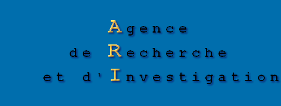

|  | |
|||
| Director: Jean-Marie Lefebvre, IFAR-qualified private investigator | ||||
| |
|
||||||||||||||||
Origins and history of the profession |
||||||||||||||||
|
Private investigators (or similar) go back as early as Pharaonic Egypt, Ancient Rome, Ancient Greece and the Inca Empire. The term "investigator" only appeared in France in the 12th century and was used to designate the King's commissioners in charge of overseeing the seneschals, provosts and bailiffs.
It was not until the 19th century, 1825 to be exact, that the first modern "Private Police" agency (designation used in France at the time) was created by the former Chief of Police for Paris and subsequent senior member of the Council of State, Guy Delavau (1788-1874).
It was in 1833 that François-Eugène Vidocq (1775-1857), initially in the employ of the Chief of Police, Etienne Pasquier, as a secret agent and then chief of the criminal investigation department from 1812 to 1832, founded the most famous private police force.
This extraordinary person, nicknamed "the Napoleon of the Police", was elevated to the status of literary myth and particularly inspired Victor Hugo, Eugène Sue, Alexandre Dumas and especially Honoré de Balzac for his hero, Vautrin. His agency, called the "Universal Intelligence Service in the Interest of Trade and Families", was so successful that in 1896, Jean-Marie Goron, the renowned Chief of the French criminal investigation department, created a private firm, the first of its kind that managed to take on a true European dimension.
Their reputation was quick to cross the Atlantic and inspire Allan Pinkerton, a Scottish revolutionary who founded an agency in Chicago, Illinois. His agency also proved tremendously successful, so much so that it still exists to this very day and has over 70 branches - including in China! Its workforce runs into the thousands and it is considered in the USA to be the forerunner of the famous FBI.
In France, the turn of the 20th century was witness to the creation of several agencies most often managed by key figures from the legal world, the most famous being Harris and Villiod. At the same time, the New World term "private investigator or detective" started taking hold. Later in 1980, a law amending the rules governing the profession in France actually established the legal term of Private Investigator (PI).
In Europe and more particularly in France, private detectives or investigators have tended to favour the freelance and intellectual side of the profession, especially drawing inspiration from the spirit and literary works of Sir Arthur Conan Doyle, the brains behind the famous character "Sherlock Holmes", whose powers of deduction and reasoning are well known; other characters that have inspired the profession include Edgar Allan Poe's "Dupin", Emile Gaboriau's "Lecoq", Wilkie Collins' "Cuff" and Agatha Christie's "Poirot".
At the current time, shrewdness, intellect, good psychological skills, pugnacity, integrity and incorruptibility are still the key basic qualities of the profession; private investigators have nevertheless kept up with the times and stayed in step with market trends, firstly by receiving increasingly advanced legal training and then by learning to master the latest investigation techniques, as well as specialising in subjects from a wide range of areas, such as criminalisation, electronics, management and computing. |
||||||||||||||||
Rules governing the profession |
||||||||||||||||
|
Private detectives or investigators in France are all appointed to gather evidence, proof and information. They are self-employed and their profession is governed by Act no. 891 of 28 September 1942, as amended by Act no. 80-1058 of 23 December 1980 and Decree no. 81-1086 of 8 December 1981. They are registered with the local prefecture and are subject to the control of the administrative authorities. In pursuance of the legislation in force, such professionals offer guarantees in terms of morality, integrity and worthiness.
They act in accordance with the provisions of Articles 1984 to 2010 of French Civil Law in respect of the prevention and redress of any prejudice sustained. Generally speaking, they establish, keep or determine the proof of facts on which the solution to a dispute may depend (particularly prior to any proceedings). Their action must be based on three fundamental, integral criteria - the legality, legitimacy and morality of the causes to be defended. Furthermore, they must act without ever illicitly invading anyone's privacy. Counter-inquiryOfficial administrative services are required to carry out inquiries for the purpose of discovering evidence of guilt in the case of offences. Their investigations are always conducted with complete objectivity as part of the aim to catch out offenders, delinquents and criminals, and bring them to justice.
In an especially important criminal case, a magistrate might be appointed to conduct the necessary
investigations, theoretically for the prosecution and the defence. But in practice, it has been shown that
the antagonistic nature of such tasks invariably prevents the examining magistrate from acting correctly
in this way. The investigations carried out by private detectives are not necessarily better conducted
than those of the official administrative services, but since they are not performed in the same way, they can lead to
different conclusions and in some cases help to establish the truth, particularly clearing people that
have been wrongly accused or prosecuted. Consequently, a private counter-inquiry often proves to be the
last resort for a citizen and therefore represents guaranteed respect for individual liberties. One way of looking at the situation is that with the current legal system, the administrative services
in general and, on a legal level, the public prosecutor's office have access, if not in practice
then at least in theory, to investigation specialists in charge of finding evidence to substantiate
the accusation, whereas too often, the accused party only has a lawyer who is legally and materially unable
to carry out an investigation and therefore produce the slightest proof of innocence. The numerous cases where people have been wrongly suspected, implicated and sometimes even sentenced, demonstrate the absolute necessity for citizens to have the right and the possibility to call for a counter-inquiry. The problem of fraud and breach of trustOnce the offence has been committed and brought to its conclusion, fraud usually comes under the responsibility of the official administrative services. But by definition, as fraud is a series of performances, lies and fraudulent schemes, its very existence is supposed to remain unbeknownst to the intended victims until its outcome.
Should the public services systematically carry out an investigation when there is the possibility of fraud or a breach of trust, such as prior to a transaction, when taking out a contract or before accepting a loan? Obviously it is not a viable solution, due to the cost for the company in general and particularly the taxpayer. Especially since in most cases, no offence has been committed or proven, even if doubts do arise, and so the parties involved would have great difficulty in lodging an official complaint, which in any case might be overstepping the mark and therefore considered reprehensible.
In such cases, the company simply needs to carry out checks at its own expense, which in order to be considered reliable, must be performed by competent professionals - private investigators. In these situations, like in any other, they safeguard the rights and legitimate interests of the principals.
One example is worth highlighting: insurance companies and private health insurers are regularly victims of fraud, the annual cost of which in France runs into billions of euros. Possibility for the citizen to instigate an investigationWhen a minor offence is committed, the official administrative services at best record the complaint,
but never carry out a major, in-depth inquiry, even if the victim suffers a considerable moral wrong or
material damage. These services only step in and have to act efficiently when attempting to solve so-called "problems of
general interest", so as to defend society as a whole when a serious disturbance of the peace has been committed.
In the event of so-called "minor" offences, an in-depth inquiry cannot be carried out for every single case
due to a lack of personnel, money and time. However, victims may, and it is their most basic right, appoint competent professionals, private detectives, to carry out a comprehensive investigation at their own expense and not by the taxpayer. Search for missing personsPrivate detectives prove to be especially indispensable in two cases: minors that have gone missing and are presumed to be runaways, and adults that have gone missing - when no proof or presumption of an accident or crime has been established.
These two cases of disappearance (several thousands of cases in our country every year) often plunge the families into a situation of extreme anguish. Even so, the official administrative services, whether for legal or material reasons, cannot truly take action. They record the disappearance and carry out simple, random checks in the family's interest, but they only really become involved if there is proof or suspicion of an accident, crime or foul play.
Most of the time, only private detectives can immediately undertake the necessary in-depth investigations for such cases. The fight against industrial espionageA study carried out by a newspaper revealed that in 2000, industrial espionage cost France the tidy sum of 20 billion euros in foreign currency - and more than 35 billion in 2003! Since then, companies need to take into consideration the average constant increase of 15% every year. In addition to this deficit, industrial espionage can only lead to or accentuate a lack of competitiveness against foreign industries.
However, apart from a few major manufacturers whose products relate to national defence and whose security is particularly guaranteed by the 1 500 agents of the counter-espionage services, private investigators spearhead the fight against industrial espionage. There are a wide range of complex techniques to combat this scourge, which are primarily based on prevention. In this context, it would be completely inconceivable for the security of industrial secrets to be handled by the state and not by the private companies directly concerned.
By defending the rights and interests of industrial companies, private detectives consequently have a beneficial influence on the French economy and play an active role in safeguarding the nation's fundamental interests. Services relating to company managementPrevention in terms of security for traders, manufacturers and financial companies, stems directly from the studies carried out and the advice given by private investigators - particularly in the fight against theft and fraud in companies and against shoplifting in shops and hypermarkets.
They also play a key role in the administrative management of companies for all problems relating to unfair competition, solvency, counterfeiting, industrial tribunals, tracking down debtors, and so on. This essential mission performed by private investigators helps to reduce the number of offences committed nationwide, while producing a positive effect on trade and industry. Services relating to civil affairsIn-depth investigations, which are sometimes required to produce evidence in the event of problems concerning divorce proceedings, custody or separation rights, specific genealogical searches and even for premarital inquiries, do not fall under the responsibility of any official service and can therefore only be dealt with in a professional manner by private investigators - it is worth noting that in French Civil Law, the burden of proof always falls upon the party instigating the proceedings.
Nevertheless, all such social affairs are of the utmost importance for private individuals, and the legal, moral and legitimate services carried out by private detectives in this particular area can affect the rest of their lives. Private detectives consequently play an essential, irreplaceable role in safeguarding citizens' legitimate rights and interests in everyday life. Advantages of the profession's freelance statusPrivate investigators are completely freelance and are obviously highly unlikely to come under any pressure. As a result, citizens can rest assured that the investigation and its conclusions will be entirely objective, regardless of any pressure from politicians, government or other quarters. Furthermore, as their activities are not restricted to any given geographical area, they can perform their mission effectively both at home and abroad. ConclusionPrivate detectives complement the work carried out by official administrative services and especially by other freelancers representing the law, such as lawyers, and other members of the legal profession.
They provide an essential service for citizens looking for an alternative course of action as part of the democratic process, while acting as a factor of social peace. Given the complementary nature of their profession, which rules out any notion of repression, private investigators can in no way be remotely likened to a "parallel police force".
Note that the profession is still banned in so-called "totalitarian" countries, which
fail to respect personal freedom and human rights in general. As professionals aware of their responsibilities, private investigators only step in to defend legal, moral and legitimate causes, and consequently act without illicitly invading anyone's privacy. Also note that if required, their reports can be used in any French court and, following a well-established landmark ruling, can be considered as admissible evidence.
The status of private investigators nevertheless needs to be enhanced by the authorities and the media. Despite the considerable guarantees of worthiness, integrity and morality provided by Act no. 80-1058 of 23 December 1980 and Decree no. 811086 of 8 December 1981, it would currently be a step in the right direction if the legislator were to re-examine and improve the conditions governing the profession of private investigator. It would obviously represent a major step forward, not only for the professionals but also for every citizen. |
 |
||||
 |
| All Cases Handled - Commercial, Financial, Industrial, Private & Criminal |
|
|
Research and Investigation Agency 303bis Boulevard Raspail - 75014 Paris Tel: +0033 (0)6 98 64 75 11
Registered with the Paris Police Headquarters under no. 961 A.P.R. Federal Trade Identity Card no. 568 Company incorporation no. B 436 135 886 00280 - NACE no. 746Z |
 |
© 2005 M.WEB Design - All rights reserved